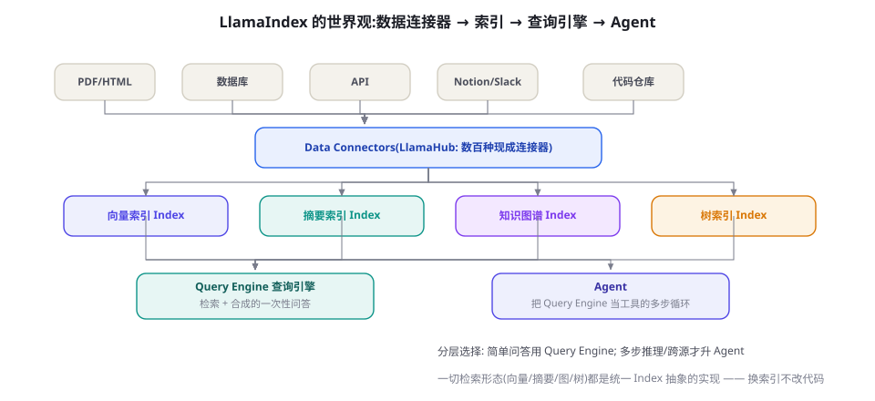

LlamaIndex：数据框架与 Agent 融合
如果说 LangChain 从「链」出发长出了数据能力，LlamaIndex 则从「数据」出发长出了 Agent 能力。本章讲清它的核心抽象（Reader/Index/Query Engine）、检索形态全家桶、以及 Workflow 事件模型——帮你判断什么时候它是比通用编排框架更对口的选择——以及什么时候不是。
世界观：一切从数据接入开始
LlamaIndex（2022 年末以 GPT-Index 之名诞生）的基因与 LangChain 不同：它的第一性问题不是「怎么编排模型」，而是「怎么把异构数据变成 LLM 能用的形态」。这个基因决定了它的三层世界观：

- 接入层（Readers/Connectors）：LlamaHub 提供数百种数据连接器——PDF、Notion、Slack、数据库、API、代码仓库……统一成 Document/Node 模型。「Node」是 LlamaIndex 的核心数据单元（带元数据与关系的块，第 20 章的 chunk 在这里的正式形态），Node 之间可以表达父子、前后等关系——这为「父子块检索」（第 20 章）等高级模式提供了原生支持。
- 索引层（Indexes）：把 Node 组织成不同的检索结构——向量索引（默认）、摘要索引（顺序全文）、树索引（层级汇总）、知识图谱索引、关键词表索引。统一抽象的价值：换索引形态不改上层代码——同一个 Query Engine 接口背后可以是任何检索结构。
- 消费层（Query Engine / Agent）：查询引擎是「一次检索 + 一次合成」的问答单元；Agent 则把多个查询引擎当作工具，做多步推理。两级消费的设计暗含一个重要的架构纪律：能一轮解决的不要上循环。
from llama_index.core import VectorStoreIndex, SimpleDirectoryReader
# 1) 读数据(LlamaHub 有数百种专业 Reader)
docs = SimpleDirectoryReader("data/").load_data()
# 2) 建索引(分块+嵌入+入库一条龙,默认配置已相当能打)
index = VectorStoreIndex.from_documents(docs)
# 3) 查询引擎:一次检索+合成
qe = index.as_query_engine(similarity_top_k=5)
print(qe.query("退款政策的核心条款是什么?"))
# 4) 换索引形态: 同一接口
from llama_index.core import SummaryIndex
summary_qe = SummaryIndex(docs).as_query_engine(
response_mode="tree_summarize") # 层级汇总,适合全局问题
# 5) 升级为 Agent: 把多个查询引擎当工具
from llama_index.core.agent import ReActAgent
agent = ReActAgent.from_tools(
[qe.as_tool("policy_search", "查售后政策"),
summary_qe.as_tool("report_search", "查分析报告")],
verbose=True)
print(agent.chat("会员用户退货的政策和去年的投诉分析各是什么?"))索引形态详解：四种结构各自的性格
「统一 Index 抽象」值得单独展开，因为选对索引形态对效果的提升常常大于调参。四种主要形态的性格速写：向量索引（VectorStoreIndex）——语义相似检索的默认形态，性格「模糊而宽容」：换种问法也能命中，专名与否定是盲区（第 20 章）；适合开放问答。摘要索引（SummaryIndex）——把全部内容按顺序提供给合成器（可配 tree_summarize 层级汇总），性格「全面而昂贵」：不挑问题直接通读，适合「给我这份报告的所有要点」类全局问题（第 21 章的 Global 思路）。树索引（TreeIndex）——自底向上把块汇总成节点、再汇总成摘要的层级结构，性格「分层省算」：查询时从顶层摘要下行，只展开相关分支，是 RAPTOR 式层级检索的工程形态。知识图谱索引（PropertyGraphIndex）——抽取实体与关系构建图，性格「精确而娇贵」：多跳关系查询的利器，抽取质量与维护成本都高（第 21 章 GraphRAG 的工程化）。选择流程：先用向量索引建立基线 → 评测失败聚类（第 21 章诊断五问）→ 失败集中在全局问题则加摘要/树，集中在关系问题则评估图谱。多数应用最终是「向量为主 + 一种增强」的混合形态。
检索形态全家桶：LlamaIndex 的看家本领
第 20-21 章讲过的进阶检索技术，LlamaIndex 大多有「开箱即用」的实现——这是它对数据密集应用的真正吸引力：
| 技术 | LlamaIndex 组件 | 对应章节 |
|---|---|---|
| 父子块检索 | AutoMergingRetriever + node 关系 | 第 20 章 |
| 混合检索 + RRF | QueryFusionRetriever（向量+BM25 可配） | 第 20 章 |
| 重排序 | node_postprocessors 挂各种 Reranker | 第 20 章 |
| 层级摘要（RAPTOR 式） | SummaryIndex + tree_summarize | 第 21 章 |
| 知识图谱检索 | KnowledgeGraphIndex / PropertyGraphIndex | 第 21 章 |
| 自反思检索 | SubQuestionQueryEngine（子问题分解） | 第 21 章 |
对复合问题（「对比 A、B 两产品的定价与售后」），这个组件自动分解为子问题、逐个查询、汇总答案——第 21 章「分解式多跳」的开箱实现。它常与第 21 章的 Agentic 路由配合：简单问题走 Query Engine，复合问题交给它。开箱件的质量对你的语料有依赖，评测集照旧先行。
摄取管线（IngestionPipeline）：生产级的离线层
LlamaIndex 的 IngestionPipeline 把第 20 章讲的「离线索引管线」组件化：按序挂载转换器（分块 → 嵌入 → 可选的抽取），配 docstore 实现增量摄取——文档内容指纹不变就跳过，改动只重处理增量部分。生产价值的三个点：① 断点续跑——万份文档的批量索引中途失败，重跑只处理未完成的；② 策略版本化——分块策略变了需要全量重建时，用「新 collection 新索引 + 校验后切换」的蓝绿模式，避免在线索引处于半新半旧状态；③ 多租户隔离——pipeline 配置里按租户打 metadata 前缀，检索层过滤（第 20 章 ACL 原则）。离线层的工程质量决定在线层的天花板——这是第 20 章「摄取三闸门」的框架化落地，两个视角合起来就是完整的摄取工程学。
多源数据整合：路由与聚合的两种姿势
企业真实场景几乎总是多源（政策库 + 产品库 + 工单历史 + 数据库），LlamaIndex 提供两条整合路线。路由式（RouterQueryEngine）：为每个源建独立查询引擎，路由器（LLM 或分类器）按问题选引擎——优点是各源独立治理（各自的提示词、过滤、评测），缺点是「跨源问题」单路由答不了（需要的是两个源的信息合璧）。聚合式（并行检索 + 合成）：所有相关源同时检索，合成段统一作答——优点是跨源问题自然解决，缺点是噪音互串（不相关源的块挤占预算）与成本上升。生产的成熟形态是两者混合：先路由后聚合——路由器先把问题分发到「源组合」（比如「售后问题 = 政策库 + 工单历史」），组合内并行检索统一合成。源组合的映射表是一份值得精心维护的领域资产（它本质是第 21 章路由器思想的源级应用），同时别忘了每一源都要过自己的权限过滤——聚合不能聚合出越权。
关于 Node 模型再补一个实战细节：元数据字段的「自动注入」机制。LlamaIndex 默认把 Node 的 metadata 嵌入到被嵌入的文本与合成提示中（embed_metadata/inject_metadata 可配）——这意味着你在 metadata 里写的「来源文档名、章节标题、日期」会直接出现在检索命中后给模型的文本里，等于免费实现了第 20 章的「面包屑前缀」。用好这个机制的标准做法：入库时统一打 metadata（source、section、date、acl），让「前缀注入」变成框架行为而非你的手工拼接。元数据是检索系统里「结构性信息」的容器——语义检索管「说什么」，元数据管「是谁的、哪来的、给谁看」，两者合力才有生产级的检索。
生产注记：LlamaIndex 项目的四个关键决策点
把一个 LlamaIndex 项目从 demo 推向生产，四个决策点的取舍决定成败。决策一：存储后端——默认内存存储重启即失；生产要配置向量库（pgvector/Qdrant 等，第 20 章选型表）与文档存储（docstore），并理解「index 的重建 vs 增量更新」策略——LlamaIndex 的插入式更新（insert）对向量索引友好，对图索引弱（与第 21 章结论一致）。决策二：分块与元数据策略——框架默认分块（512 token）只是起点，第 20 章的分块纪律（结构感知、面包屑前缀、父子关系）依然全部适用——Node 的元数据字段是承载这些策略的地方。决策三：合成提示词——查询引擎的合成提示词默认是英文泛型版，中文场景必须替换（含「仅依据资料作答 + 标注来源 + 承认未知」的纪律，第 20 章生成段四纪律）。决策四：评测接线——框架有基础评估模块（faithfulness/relevancy），但你的评测集与回归流程（第 13、56 章）必须自建——框架给的是零件，质量体系永远是自己修的路。
Workflows：事件驱动的 Agent 模型
LlamaIndex 的 Agent 能力经历了从 ReActAgent 到 Workflow（2024 年末起）的演进。Workflow 用事件驱动的类定义 Agent 逻辑：@step 装饰的方法消费/发布事件（如 QueryStartedEvent → RetrievedEvent → SynthesisEvent），支持流式、检查点（WorkflowCheckpointer）与人在环（wait_for_event）。它与 LangGraph 的图模型解决同一问题（显式控制流 + 持久化），风格差异是「事件订阅」vs「图拓扑」——概念复杂度相近，选型更多看团队已投的生态。对「以检索为主、逻辑为辅」的应用，LlamaIndex Workflow 的数据亲和（事件里天然流转 Node 与检索结果）是个真实的舒适度优势。
Workflow 实战：一个「检索-判断-补充」的事件流
from llama_index.core.workflow import (
Workflow, step, Context, Event, StartEvent, StopEvent)
class RetrievedEvent(Event):
nodes: list
query: str
class NeedMoreEvent(Event):
feedback: str
query: str
class ReflectiveRAG(Workflow):
@step
async def retrieve(self, ev: StartEvent | NeedMoreEvent,
ctx: Context) -> RetrievedEvent:
q = ev.query if isinstance(ev, StartEvent) else ev.query
nodes = self.retriever.retrieve(q)
return RetrievedEvent(nodes=nodes, query=q)
@step
async def judge(self, ev: RetrievedEvent, ctx: Context) -> StopEvent:
verdict = await self.llm.acomplete(
f"资料足以回答吗?(enough/insufficient+改写建议)
"
f"问题: {ev.query}
资料: {str(ev.nodes)[:1500]}")
if "enough" in verdict.text:
ans = await self.llm.acomplete(
f"仅依据资料回答:
{str(ev.nodes)[:3000]}
{ev.query}")
return StopEvent(result=str(ans))
fb = verdict.text.split("insufficient")[-1].strip()
return NeedMoreEvent(feedback=fb, query=fb) # 改写后再来一轮
w = ReflectiveRAG(timeout=60)
result = await w.run(query="跨部门的报销政策冲突怎么处理?")对照第 21 章的 Self-RAG 平替实现：同一逻辑，Workflow 版获得了三样东西——类型化事件（RetrievedEvent/NeedMoreEvent 是显式的数据契约）、持久化钩子（配合 WorkflowCheckpointer 可断点续跑）、可视化（框架可绘制事件流图）。这就是「框架化」的真实含义：逻辑没变，工程属性增加——评估是否值得，取决于你要不要那三样东西。
选型对照：LlamaIndex 还是 LangChain 系
| 维度 | LlamaIndex | LangChain/LangGraph |
|---|---|---|
| 核心抽象 | Document/Node → Index → QueryEngine | Chain/Graph → 工具/状态 |
| 最强处 | 检索形态全家桶 + 数据连接器 | 编排表达力 + 生态广度 |
| Agent 能力 | 够用（Workflow 事件模型） | 强（LangGraph 生产级） |
| 学习曲线 | 缓（数据思维） | 陡（图思维） |
| 最适合 | 文档/知识密集的问答与分析 | 流程/协作密集的复杂系统 |
「LlamaIndex 检索 + LangGraph 编排」的混用很流行，最常见的坑是把 Query Engine 当「黑盒工具」塞给编排层后，失去了对检索细节（Top-k、过滤、重排）的动态控制——编排层只知道「问了、答了」，不知道「该怎么问」。两种正确姿势：姿势一（浅混用）——把 Retriever（而非 QueryEngine）作为桥接对象，编排层保留「改写查询/选过滤器」的控制权；姿势二（深混用）——干脆只用 LlamaIndex 的数据层（Node/索引/存储），检索编排也放进 LangGraph 节点里自写。判断依据：你的编排逻辑需要多细粒度地「指挥」检索——粗粒度（按问题类型选引擎）姿势一足够；细粒度（迭代改写、多跳导航）用姿势二。
与评测体系的接线
LlamaIndex 自带的评估模块（FaithfulnessEvaluator、RelevancyEvaluator 等）是「零件」而非「体系」——把它们接进第 13 章的评测闭环时，有三个接线要点。要点一：裁判模型与被评模型分离——用同款模型给自己打分会有自我偏好（第 57 章），评测裁判选另一家或至少另一档模型。要点二：分环节采样评测——检索层单独评（用 RetrieverEvaluator 算 hit-rate/MRR，配合你自建的金标准），生成层单独评（faithfulness/relevancy），别只看端到端总分——总分一样时，分层分数决定优化方向。要点三：把评测接进 CI——框架的评估器是 Python 函数，天然可以进 pytest/CI 流程；每次改分块、换嵌入、调提示词，自动跑回归。到这一步，你在第 13 章学的「评测思维」就在这个框架里完整落地了——框架给了仪表，驾驶习惯靠你。
LlamaHub 生态速览：连接器的复利
单独一节给 LlamaHub，因为「数据接入的复利」是这个生态最被低估的价值。它的连接器分四类：文件类（PDF/Office/HTML/图片 OCR）、SaaS 类（Notion、Confluence、Slack、Google Drive、飞书等）、数据库类（SQL 各家、MongoDB、图库）、服务类（各向量库、搜索服务、嵌入服务）。复利来自标准化：所有 Reader 输出统一的 Document 模型——这意味着「给系统加一个新数据源」从「开发一个接入模块」变成「装一个包 + 写五行配置」。对企业知识库这类「数据源会持续增加」的场景，这个边际成本的下降是架构级的：你的摄取管线、评测、权限模型都不需要为新源改动。选型时给连接器生态的权重：如果你的场景是「企业内部多源知识整合」，这个权重应该排进前三——它的省时是按「每个数据源一周」计的。同样地，连接器的质量参差是必付的税：接入新源后照例跑你自己的解析质量对比（与 LlamaParse 节的方法一致），社区包不背你的质量责任。
Agent 消费的两级纪律：什么时候升级
「两级消费」的纪律值得展开成一棵决策树，因为「上来就写 Agent」是数据应用最常见的过度设计。第一级：Query Engine 直接答——单源、单跳、答案在检索命中的块里就能组出来。这一级覆盖了企业知识问答的大多数流量（第 21 章的 L0/L1），它的优势不只是便宜：行为可预测、易评测、易缓存。第二级：Agent（多引擎工具循环）——需要跨源对照、多步推理、或「检索结果决定下一步查什么」的场景才升级。升级的触发信号：评测集里「复合问题」的失败占比超过两成、或用户追问「把两个信息结合起来」的频率上升。两级共存的形态就是第 21 章的三级路由——LlamaIndex 的 RouterQueryEngine + Agent 组合是其工程化。纪律的价值在于「降级」：当 Agent 在评测中表现并不比直接查询好时（常见于过度自信的团队），要有勇气把流量收回第一级——工程的美德是「刚刚好」，不是「更聪明」。
三个高频疑问
Q：LlamaIndex 和「自己用 pgvector 写 RAG」怎么选？这问的是「框架 vs 自研」在检索域的特化版。决策三问：① 你需要几种数据源连接器？三个以上 → LlamaHub 的现成件价值大。② 你需要几种高级检索形态？父子块/融合/分解/层级要两个以上 → 开箱件价值大。③ 你的检索逻辑有多少业务特化？重特化（复杂权限模型、领域路由、自定义评分）→ 自研更顺（框架的抽象要不断绕）。三个答案指向一致就选它；矛盾就选「浅用框架」（只用 Reader 与存储层，检索逻辑自写）。
Q：LlamaParse 值得用吗？它是官方的文档解析服务（收费），主打复杂版面（表格、图文混排、嵌套列表）的解析质量。评估方法与选任何 SaaS 一致：拿你最难的 20 份真实文档，与开源方案（PyMuPDF+规则、MinerU、Marker 等）盲比解析质量；差距大且文档是业务核心 → 值得；差距可接受 → 开源方案 + 第 20 章的清洗闸门足够。解析质量是 RAG 效果的第一因（第 20 章），该花的钱别省；但「该花」要由你自己的对比实验说了算。
Q：Workflow 会取代 LangGraph 的位置吗？两者的功能面已经高度重叠（事件/图、检查点、人在环），短期内是「各自生态内的合理选择」格局。已用 LlamaIndex 做数据层 → Workflow 顺手；重编排需求（复杂子图、跨系统状态）→ LangGraph 更成熟。跟着你的主生态走，别为「图 vs 事件」的表达差异迁移系统——迁移成本永远大于表达差异。
对照第 28 与 34 章有一个耐人寻味的趋势：LangChain 在加强数据层（LlamaHub 式的集成生态、父文档检索器），LlamaIndex 在加强编排层（Workflow、检查点、工具调用）——两条路线在向「彼此的腹地」渗透。这个现象对选型的启示不是「等它们合并」，而是：框架的功能差异会持续收窄，真正的长期差异在「默认思维」与「社区重心」——遇到检索难题时社区讨论的深度（LlamaIndex 优势）、遇到编排难题时的生产案例储备（LangGraph 优势）。选择框架本质上是选择你未来三年主要与哪类难题的社区一起解决问题。这个判断维度比任何功能对比表都更不容易过时。
本章收尾的一个动手建议：把第 20 章的项目拆成「数据层（LlamaIndex）+ 逻辑层（自研/图）」重写一遍，重点体会「Reader 复用 + Node 元数据 + IngestionPipeline 增量」三件省心事的实际价值；同时体会「抽象分层后调试变绕」的实际代价。两边都亲手摸过，你对「框架 vs 自研」的判断才真正属于你自己——这是框架篇每一章共同的隐藏作业。
最后一个观察作为本章的收束：LlamaIndex 的存在本身，提醒我们「Agent 框架」这个词的欺骗性——它其实是一个光谱，从「数据管线工具」到「编排运行时」排开，LlamaIndex 偏向前者，LangGraph 偏向后者，中间站满了各色框架。你在第 26 章学的六层技术栈，每一层都有自己的「专门工具层」——检索层有 LlamaIndex，观测层有 Langfuse，网关层有 LiteLLM……「选一个全家桶」与「选一组专业件」是两条永久的架构路线，前者胜在一致性与上手速度，后者胜在每个环节的最优解。框架篇剩余章节（低代码、协议层）会继续丰富这张光谱图，你心中那条「自己的技术栈曲线」也会随之越来越清晰。
把本章与第 20-21 章的关系做一个最终的校准，作为阅读路径的收束：那两章教你「检索系统的原理与设计」，本章教你「用 LlamaIndex 这套现成零件把它们搭出来」。零件的抽象（Index/Retriever/QueryEngine/Workflow）与原理的概念（索引/检索/生成/循环）几乎一一对应——这种「一一对应」正是你读框架文档的最大资本：文档说「AutoMergingRetriever」，你立刻知道那是父子块；文档说「tree_summarize」，你立刻知道那是层级摘要。框架文档从此不再是 API 手册，而是你已会做的东西的「预制件目录」——这份视角转换，就是框架篇想交付给你的核心能力。
补充一个性能细节收尾：LlamaIndex 的「ingestion 缓存」会为每个 Node 的嵌入结果建立本地缓存（按内容哈希）——分块策略微调后重跑管线，未变化的块直接复用旧嵌入，不必整库重算。这个机制与第 21 章讲过的「再索引税」直接相关：嵌入模型不能轻换的原因之一就是缓存全失效。工程上把「缓存清理」与「策略版本」绑定管理，可以让「微调分块」的实验成本降到原来的几分之一——实验便宜了，迭代次数自然就上去了。
框架篇的进度条提醒：本章之后，主要的编排与数据框架就介绍完毕（LangGraph、Agents SDK、Agent SDK、AutoGen、CrewAI、MetaGPT、LlamaIndex 七家）。接下来两章换个视角——低代码平台（给不写代码的人）与协议层（给所有框架打通互操作），然后框架篇收官进入评测篇。你已经拥有了完整的「机制 → 框架」映射能力，最后两章会轻松很多。
小节补充：关于「Node 的 relationship」再多说一句实战用法——除了父子（用于 AutoMerging），还有 NEXT/PREVIOUS（原文顺序，供摘要索引按序合成）与 SOURCE（溯源根节点，用于引用展示）。在摄取层一次性把关系打对，后续所有高级检索模式（合并、溯源、按序合成）都是「配置」而非「开发」——数据模型的先见，决定了上层功能的天花板。这也是「数据框架」这个名字的真正分量：在数据为中心的系统里，建模即架构。
「建模即架构」的判断有一个实用的检验方法：把你的 Node 模型打印出来贴在墙上，问团队三个问题——半年后的新数据源能装进这个模型吗？新的检索模式（假设明天出现）能用现有关系表达吗？权限与审计能从这些字段推导吗？三个「能」，说明建模过关；任何一个「不能」，趁早改——数据模型是最昂贵的重构对象。
五步上手的代码示例之外，再给一条「第一步之后」的提醒：SimpleDirectoryReader 只是开发期的最简读法，生产场景请直接换用与你的数据源匹配的专业 Reader（LlamaHub），并保留「解析质量对比」的习惯——同一个 PDF，不同 Reader 的解析质量差异可以到「能不能答对题」的级别。数据接入质量是整条链的第一因，这里省下的十分钟，未来要用一百小时的调试偿还。
顺着两级纪律再补一句成本视角的话：每一级之间的成本差是「数倍到十数倍」的量级——Agent 一轮循环至少三次 LLM 调用（思考、工具、合成），而查询引擎一次搞定。这个量级差意味着「不必要的 Agent 化」是这个领域最贵的浪费之一，比「不必要的框架」贵得多。用你的评测数据为升级背书，让每一级都「挣到自己的钱」——这套「按证据分配智能」的思路，是本章与第 21 章、第 78 章共同的底层逻辑。
顺带澄清一个常见误会：LlamaIndex 名字里的 Llama 与 Meta 的 Llama 模型并无隶属关系（它诞生时叫 GPT-Index，后为蹭生态热度更名）。它与 Meta 的 Llama 家族模型完全兼容但彼此独立——「用 LlamaIndex 编排 Llama 模型」只是两个开源项目的普通组合。在框架名与模型名高度趋同的这个领域，保持这种「名字的清醒」不算咬文嚼字：把生态位看错的选型讨论，往往就是从名字的误会开始的。
以一个跨章提醒结束：无论选哪个框架，第 20 章的评测集与指标体系是你的「不变资产」——框架换了三遍，评测集依然有效；反之，没有评测集的框架迁移只是一次「用新的方式不知所措」。这也是本章把评测接线单独成节的原因：框架的迁移成本可以很高，但评测体系的迁移成本几乎为零——因为它描述的是你的业务，不是任何框架。
本章小结
- LlamaIndex 的基因是数据：连接器（LlamaHub）→ Node 模型 → 多形态索引 → 两级消费（引擎/Agent）。
- 统一 Index 抽象让「换检索形态不改代码」；进阶检索技术大多有开箱件。
- SubQuestionQueryEngine 是分解式多跳的开箱实现；两级消费纪律：能一轮解决不上循环。
- Workflow 事件模型补齐 Agent 能力：流式、检查点、人在环。
- 选型判据：数据密集选 LlamaIndex，流程密集选 LangGraph；混用（检索层+编排层）是成熟形态。
- 多源整合的成熟形态是「先路由后聚合」：路由到源组合，组合内并行检索统一合成。
自测题
- 把第 20 章的项目用 LlamaIndex 重写：哪些组件被替换？哪些仍需自建（评测、权限过滤）？
- 「Node 带 `关系`」这个设计让哪些高级检索模式变成可能？举两个并说明。
- 你的项目该选哪条路线？用表 34-2 的维度逐项打分后给出结论与置信度。
参考文献与延伸阅读
- LlamaIndex (2024). LlamaIndex 官方文档. docs.llamaindex.ai; github.com/run-llama/llama_index
- LlamaHub (2024). 数据连接器与组件市场. llamahub.ai
- LlamaIndex (2024). Building Agentic Workflows 博客系列. llamaindex.ai/blog
- Saravan, J. (2023). LlamaIndex 创始人关于数据框架定位的访谈与博文.（「data framework」定位的原始阐述）